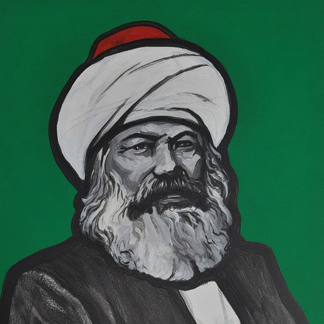
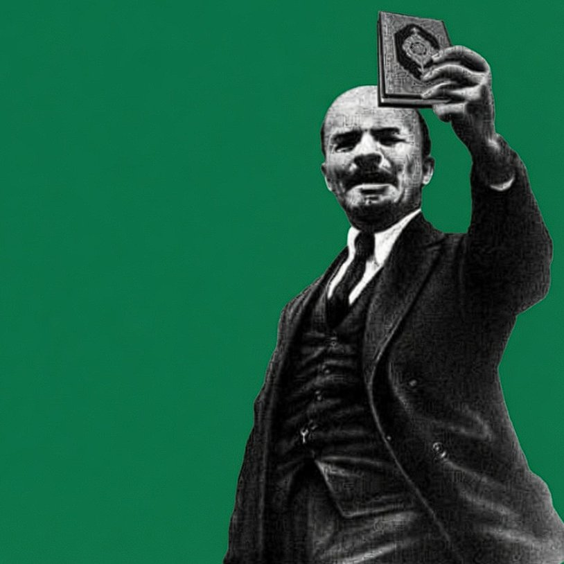

ANNEX D // THE FAITH FILES // SCRIPTURE CITED, NOT PARAPHRASED
THE FAITH FILES
Christian communism first, because it has the stronger case and the
older one: the Jerusalem church held all things common and distributed according to need
eighteen centuries before the Gotha Programme found the words. Then Islamic socialism, which
legislates against concentration without abolishing ownership. What the texts say, what was
built on them, and where each one breaks with materialism.
SCRIPTURE VERBATIMPRACTICE ON RECORDTHE BREAK FILED TOO
01 Why the Archive Files These At All
The twenty files upstairs are schools of a modern movement that dates itself from 1848.
But the claim they make — that private ownership of the means of subsistence is a scandal,
that the surplus belongs to those who produce it, that the rich are a problem and not an
aspiration — was made in writing more than a thousand years before Marx, in texts that are
still read weekly by roughly half the human race.
Engels saw the point and wrote it down. On the History of Early Christianity (1894)
opens by saying the early church and the modern workers' movement have "notable points of
resemblance": both began among the poor and the enslaved, both were persecuted, both promised
a coming order that would invert the existing one, and both split into sects the moment they
grew. He was not being ecumenical. He was making a materialist point about what oppressed
classes produce when they have no army.
"The history of early Christianity has notable points of resemblance
with the modern working-class movement… Christianity was originally a movement of oppressed
people: it first appeared as the religion of slaves and emancipated slaves, of poor people
deprived of all rights, of peoples subjugated or dispersed by Rome."
— ENGELS, ON THE HISTORY OF EARLY CHRISTIANITY (1894)
02 Christian Communism: The Text
JESUS OF NAZARETH Christ Pantocrator, Sinai, 6th c. // the first programme
THOMAS MÜNTZER c.1489–1525 // omnia sunt communia
DOROTHY DAY 1897–1980 // the Catholic Worker
GUSTAVO GUTIÉRREZ 1928–2024 // the preferential option
The founding document of Christian communism is not a manifesto by a theologian. It is a
passage of narrative in the Acts of the Apostles describing what the first congregation in
Jerusalem actually did, and it is unambiguous. It is also the single strongest text either
tradition possesses on the property question, because it does not recommend, moderate or
regulate ownership. It reports its abolition, as accomplished fact, among the people who knew
the founder personally.
"And all that believed were together, and had all things common;
and sold their possessions and goods, and parted them to all men, as every man had need."
— ACTS 2:44–45
"And the multitude of them that believed were of one heart and of one
soul: neither said any of them that ought of the things which he possessed was his own; but
they had all things common… neither was there any among them that lacked… and distribution
was made unto every man according as he had need."
— ACTS 4:32–35
The phrase in that last line survived nineteen centuries and arrived in the
Critique of the Gotha Programme as "to each according to his needs." Whether
Marx took it from Acts or from Louis Blanc, who took it from a culture saturated in Acts, is
a question of transmission rather than of origin. The formula is scriptural.
What follows in Acts 5 is the part rarely quoted from pulpits: Ananias and Sapphira sell
a field, secretly withhold part of the price, lie about it to the congregation, and drop dead
on the spot. Whatever one makes of the theology, the narrative function is plain. The text
treats the private retention of surplus inside a community of goods as the gravest possible
offence.
What Jesus is recorded as saying
On the rich, without qualification
"It is easier for a camel to go through the eye of a needle, than for a rich man to
enter into the kingdom of God" (Matthew 19:24). And to the rich young ruler immediately
before it: "sell that thou hast, and give to the poor" (19:21). Luke's version of the
beatitudes drops the spiritualising and states it as class: "Blessed be ye poor: for yours
is the kingdom of God… But woe unto you that are rich! for ye have received your
consolation" (Luke 6:20, 24).
The programme, announced
Reading Isaiah in the synagogue at Nazareth, he takes as his mandate: "to preach the
gospel to the poor… to heal the brokenhearted, to preach deliverance to the captives…
to set at liberty them that are bruised" (Luke 4:18). The passage he is quoting ends in
the Jubilee, the Levitical institution requiring the periodic cancellation of debts and
the return of alienated land to those who lost it.
The Magnificat
His mother's song, sung at every vespers for fifteen centuries, is a programme of
inversion: "He hath put down the mighty from their seats, and exalted them of low degree.
He hath filled the hungry with good things; and the rich he hath sent empty away"
(Luke 1:52–53). Several colonial governments banned its public recitation.
Direct action
The one recorded occasion on which he uses force, he uses it against finance: he
overturns the tables of the money changers in the temple and drives them out with a
whip of cords (Matthew 21:12, John 2:15). It is the act that gets him killed a week
later.
The epistles continue it. James addresses the rich directly: "your riches are corrupted…
the hire of the labourers who have reaped down your fields, which is of you kept back by
fraud, crieth" (James 5:1–4) — wage theft named as the thing that cries out to God. And
2 Thessalonians 3:10 supplies a line with a remarkable afterlife: "if any would not work,
neither should he eat." Lenin quoted it as the principle of socialism. It was written
verbatim into Article 12 of the 1936 Soviet Constitution, a document otherwise not
known for its scriptural citations.
03 Christian Communism: The Practice
The monastic rule. From the fourth century, hundreds of thousands of people lived
for fifteen hundred years under rules abolishing private property among the members,
distributing by need, and requiring manual labour of everyone. It is the longest-running
experiment in communal production in European history, and it worked because entry was
voluntary and exit was possible.
Thomas Müntzer, 1525. Preacher of the German Peasants' War, who denounced Luther
as the princes' theologian and demanded that "all things be in common." Defeated at
Frankenhausen and beheaded. Engels wrote a whole book about him,
The Peasant War in Germany (1850), reading the war as a class struggle in
theological costume, and Müntzer as a communist born three centuries early.
The Diggers, 1649. Gerrard Winstanley led a group onto St George's Hill to plant
vegetables on common land and published The True Levellers Standard Advanced,
arguing that "the earth was made a common treasury for all" and that buying and selling
land was the original fall. Broken up by landlords' hired men inside a year.
Liberation theology, 1968 onward. The Latin American church's turn: the Medellín
conference, Gustavo Gutiérrez's A Theology of Liberation (1971), and the "preferential
option for the poor." Camilo Torres, a Colombian priest, joined the ELN guerrillas and was
killed in 1966. Four priests served in the Sandinista government; Ernesto Cardenal was
publicly rebuked on an airport tarmac by John Paul II in 1983 and suspended. Óscar Romero
was shot at the altar in 1980 for naming the oligarchy from the pulpit. See
FILE 14 for the milieu.
Dorothy Day and the Catholic Worker, from 1933: houses of hospitality, voluntary
poverty, unqualified pacifism, and an open declaration that the movement's economics were
communist and its authority was the gospel.
Archive clip // Christian communism
04 Islamic Socialism: The Text
The Qur'an does not abolish property. It does something structurally distinct and, on the
question of concentration, unusually explicit: it treats the accumulation of wealth in few
hands as a defect in the circulation of the whole, and legislates against it.
"…so that it will not be a perpetual distribution among the rich
from among you."
— QUR'AN 59:7, ON THE DIVISION OF COMMUNAL PROPERTY
That clause is the hinge of every Islamic socialist argument ever made. The stated purpose
of the distribution rules is to prevent wealth becoming a closed circuit among the wealthy.
Around it stand the others:
Against hoarding
"Those who hoard up gold and silver and spend it not in the way of God — give them
tidings of a painful punishment" (9:34–35). Hoarding here is not miserliness as a private
vice; it is capital withdrawn from circulation, condemned as such.
The poor have a claim, not a request
"And in their wealth there is a due share for the beggar and the deprived"
(51:19; also 70:24–25). The word is haqq, a right. Charity in this frame is not
generosity; it is the settlement of an obligation the owner already owes.
Against usury
"God has permitted trade and forbidden usury" (2:275). The prohibition of riba
is the sharpest divergence between Islamic law and finance capital, and it is the plank
every twentieth-century Islamic socialist reached for first.
Religion measured by redistribution
Surah 107 defines the man who denies the faith not by doctrine but by conduct: he
"repulses the orphan" and "urges not the feeding of the poor," and woe to those who pray
while withholding small kindnesses. Belief is tested by the disposal of surplus.
What Muhammad is recorded as saying
On the commons. "People are partners in three things: water, pasture and fire"
(Abu Dawud). A hadith declaring the basic means of subsistence to be common property and
therefore not enclosable. Islamic jurists built a whole category of inalienable public goods
on it, and modern Islamic socialists read it as the earliest recorded statement of the
commons in Near Eastern law.
On hoarding. "No one hoards but a sinner" (Sahih Muslim) — ihtikar,
cornering a market in necessities, is prohibited outright, and classical jurisprudence
empowered the state to force hoarded stock onto the market at a fair price.
On the neighbour. "He is not a believer who eats his fill while his neighbour
beside him goes hungry" (al-Bukhari, al-Adab al-Mufrad). Faith voided by the
toleration of hunger within sight.
On the labourer. "Give the worker his wages before his sweat dries"
(Ibn Majah). And in the farewell sermon, the cancellation of all outstanding interest,
beginning with the debts owed to his own family.
Institutionally, zakat is a compulsory annual levy on accumulated wealth — not on
income — with legislated recipients, and it is one of the five pillars rather than an optional
virtue. The waqf removed property permanently from the market into perpetual public
endowment, funding hospitals, wells and schools across the Islamic world for a millennium.
And when the conquest of Iraq raised the question of dividing the farmland among the soldiers,
Umar refused and kept it in common as fay' for the whole community, present and
future. Every Islamic socialist since has cited that decision.
05 Islamic Socialism: The Practice
Abu Dharr al-Ghifari, companion of the Prophet, is the tradition's patron. He
denounced the accumulation of treasure by the governing elite at Damascus, quoted 9:34 at
them in the street, and was exiled to die in the desert at Rabadha. Ali Shariati wrote his
biography and called him the first socialist; Arab socialists from Cairo to Baghdad claimed
him.
The Qarmatians, eastern Arabia, roughly 899–1077. A state that abolished private
property among its members, ran communal granaries and a treasury that made interest-free
loans, and required no taxes of the community. The most literal experiment in common
ownership the medieval Islamic world produced, and its enemies never forgave its raid on
Mecca.
Sultan Galiev, Tatar Bolshevik, argued in the 1920s that in the colonised Muslim
world the whole nation stood in the position of a proletariat against the imperial centre,
and that Islam there was an anti-colonial rather than a reactionary force. He was the first
prominent member purged by Stalin, in 1923, and was shot in 1940. His thesis outlived him
through the anti-colonial movements and reached
FILE 12 and FILE 14
in other words.
Ali Shariati, Iran, 1960s–70s: "red Shi'ism" — the Islam of Karbala, of revolt
against usurpation — set against "black Shi'ism," the Islam of mourning and quietism that
serves whoever rules. He read Marx seriously and rejected the materialism while keeping the
class analysis.
States and parties. The PDRY in South Yemen, 1967–1990, was the only avowedly
Marxist state in the Arab world. The Tudeh party in Iran, the PKI in Indonesia —
the largest non-governing communist party on earth before the 1965 massacres — the Afghan
PDPA, Nasser's Arab socialism, the Ba'ath, Bhutto's "Islamic Socialism," and Libya's
Green Book, which declared wage labour a form of slavery and demanded "partners, not
wage-workers."

Marx in the turban // agitprop of the Muslim left

Lenin with the Qur'an // after Sultan Galiev
06 Where It Fits, Tested
The archive scores everything on the four tests from Annex A.
Applied honestly, the two traditions do not score the same.
Christian communism
Property: passes. "All things common," in the text, without qualification.
Class: passes in the prophetic and Lukan material, which names rich and poor as
opposed groups. Rupture: passes — the kingdom replaces the present order, it does
not reform it. Internationalism: passes outright: "neither Greek nor Jew" is the
oldest statement of the position the Second International failed in 1914.
Islamic socialism
Property: partial. The texts regulate, redistribute and de-commodify the
commons, but ownership, trade and inheritance are protected — zakat presupposes an owner.
Class: passes in substance. Rupture: contested, and this is the real
argument: whether the rules are a moral corrective inside a market or a different mode of
production. Internationalism: passes — the ummah is explicitly
supra-national, which is why it produced anti-colonial politics so readily.
07 The Break, Filed in Full
None of the above dissolves the quarrel, and an archive that pretended otherwise would be
doing apologetics. Three things stand in the way, and all three are load-bearing.
One: Marx's actual position. The famous line is usually quoted with its first half
amputated. In full: "Religious suffering is at one and the same time the expression of real
suffering and a protest against real suffering. Religion is the sigh of the oppressed
creature, the heart of a heartless world, and the soul of soulless conditions. It is the opium
of the people." The sentence is more sympathetic than its reputation, and it is still a
dismissal: religion is a symptom of a wound, and the cure is to close the wound, after which
the symptom is expected to disappear on its own.
Two: what the states did. The ledger is not ambiguous.
FILE 10 records the League of Militant Godless,
closed churches and closed mosques, executed clergy across the 1930s, and the sustained
campaign against Islam in Central Asia. Hoxha's Albania (FILE 17)
declared itself the world's first officially atheist state in 1967 and criminalised religious
practice entirely. The Cultural Revolution levelled temples, churches and mosques alike. Any
honest account of religious communism has to file that alongside the scripture, and this
archive files it in Annex B.
Three: the believers' objection. A communism that promises the abolition of religion
as a consequence of its success is asking believers to work for a world in which their faith
is expected to wither. Many have taken the offer anyway, on the argument that feeding the poor
is commanded now and metaphysics can wait. Many have not, and their reason is not false
consciousness.
"Religion must be declared a private affair… but we shall in no case
permit ourselves to treat the religious question in an abstract, idealistic fashion, as an
'intellectual' question unconnected with the class struggle… Unity in the real revolutionary
struggle of the oppressed class is more important to us than unity of opinion on paradise."
— LENIN, SOCIALISM AND RELIGION (1905) AND ON THE ATTITUDE OF THE WORKERS' PARTY TO
RELIGION (1909)
That is the orthodoxy's operative answer and it has not been improved on. The party is
materialist and does not pretend otherwise; it does not make atheism a condition of membership
for a worker who fights the boss on Monday and prays on Friday; it does not put the metaphysical
quarrel in front of the material one. On that footing the anti-colonial and liberation-theology
alliances were not tactical exceptions but the doctrine working as designed.
08 The Archive's Verdict
Both traditions arrived at the property question first and got the diagnosis right without
a theory of value: that concentrated wealth is a wrong done to those who produce it, that the
poor have a claim rather than a hope, and that the commons cannot be enclosed. Neither
produced a mechanism. Voluntary community of goods works at the scale of a congregation, a
monastery or a commune and has never once scaled to a society without the state doing the
scaling, which is the whole argument of the twenty files upstairs.
Between the two, the archive files Christian communism as the closer relative, and
on the instrument rather than on sentiment. It is the only tradition in this annex whose
founding text abolishes property outright rather than taxing, circulating or regulating it;
the only one that supplied the distributive formula the movement still uses; the only one that
put a line into a Soviet constitution; and the one Engels himself reached for when he wanted a
precedent for the workers' movement. Islamic socialism's contribution is real and, on
hoarding, usury and the commons, sharper in law than anything in the gospels. But its texts
regulate an owner. Acts 4 abolishes him.
Filed accordingly: the scripture is an ally and not a subsidiary. The believer who
reads Acts 4 or Qur'an 59:7 and concludes that the present arrangement of property is
intolerable has reached the archive's conclusion by a different road, and the tradition that
tried to shoot him for the road he took made an error it paid for in Poland, in Afghanistan
and across the Muslim world. The materialist and the believer disagree about the origin of the
world. They do not have to disagree about who owns it.